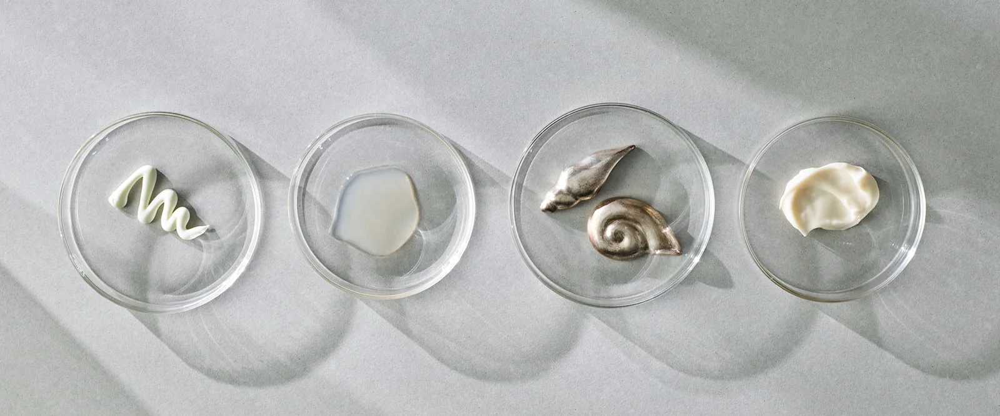
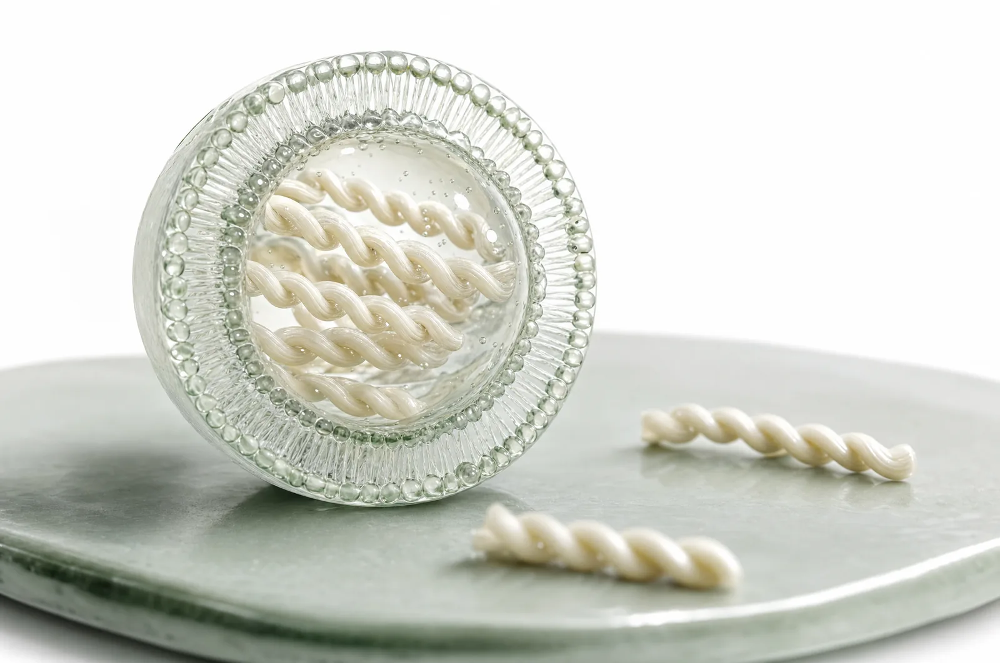
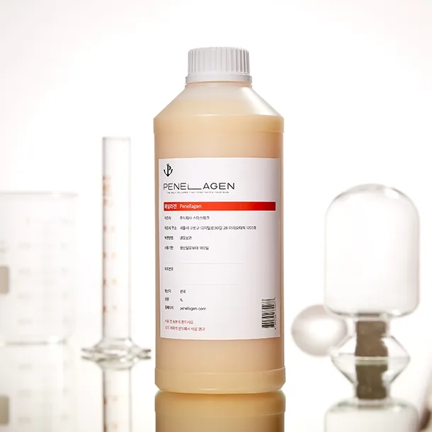
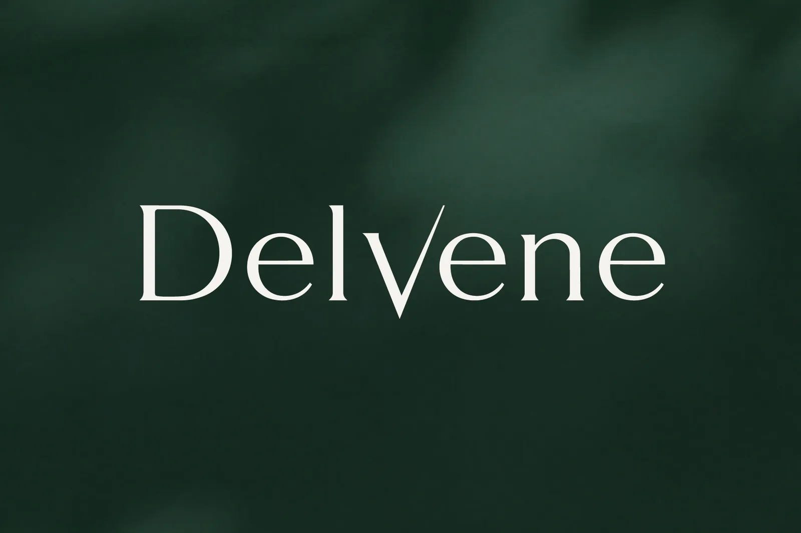

기술이 제품이 되는
세 영역
화장품 원료와 브랜드, 병의원 스킨부스터, 그리고 신약. 시장과 속도는 다르지만 출발점은 하나의 전달 플랫폼입니다.

Penellagen® · LABOPE
상용화불가사리 콜라겐 펩타이드를 피부 깊이 전달하는 화장품 원료와, 그 원료로 만든 스킨케어 브랜드입니다. 원료와 완제품을 함께 운영하며 국내 자사몰과 중국 라이브커머스 채널에서 판매합니다.

피부 속까지 닿는 콜라겐
물에 잘 녹는 콜라겐은 일반 리포좀에 담기 어려웠습니다. Penellagen® 은 탄성 에토좀에 콜라겐 펩타이드를 높은 비율로 담아 피부 장벽 너머까지 전달하도록 설계한 원료입니다. 해양 폐기물로 분류되던 불가사리를 원료로 쓰기 때문에, 회사의 자원순환 사업과 원료 사슬을 공유합니다.


Delvene®
2026년 12월 출시 예정스킨부스터 시술과 함께 쓰는 병의원 전용 부스터입니다. T-TDS 플랫폼으로 설계한 첫 제품으로, 2026년 12월 출시를 준비하고 있습니다.

모든 스킨부스터 시술의 파트너
Delvene® 은 ECM 재생 · 수복을 목적으로 하는 시중의 모든 스킨부스터 시술과 병행하는 병의원 전용 도포형 부스터입니다. 시술이 조직에 재생 신호를 넣는 동안, Delvene® 은 시술 부위의 염증성 대식세포(M1)를 회복성 대식세포(M2)로 전환해 ECM 재생 · 수복 효과를 극대화하고, 시술 뒤 따라오는 염증 부작용을 스테로이드 이상으로 억제합니다.
ECM 재생 · 수복을 목적으로 하는 시중의 모든 스킨부스터 — PN · PDRN 계열, PDLLA 계열, ECM 계열, HA · 엑소좀 계열
시술 부위의 염증성 대식세포(M1)를 회복성 대식세포(M2)로 전환합니다. 포도당 표적 T-TDS 가 염증 세포에만 항염 성분을 전달합니다.

T-TDS 가 처음 제품이 되는 자리
Delvene® 은 T-TDS 플랫폼의 첫 상용 제품입니다. 플랫폼이 염증성 대식세포를 표적하는 방식과 비임상 연구에서 확인한 결과는 연구개발 페이지에 정리했습니다.
플랫폼 연구 성과 보기신약 파이프라인
비임상 단계T-TDS 로 염증성 피부질환을 겨냥한 비스테로이드 국소 치료제를 개발합니다. 병변의 염증 세포에만 성분을 전달해, 효과는 유지하고 부작용 부담은 낮추는 것이 목표입니다.

리드 프로그램 — 국소 건선 치료제
건선 병변에서 염증을 증폭하는 대식세포를 포도당 리간드로 표적하는 비스테로이드 국소 치료제 후보입니다. 마우스 건선 모델에서 가장 강한 등급의 스테로이드 대조군 이상으로 홍반 · 각질 · 두께 지표가 개선됐고, 비임상 패키지를 갖춰 IND 신청을 준비하는 검증 단계에 있습니다.
같은 M1 표적 T-TDS 로 비염 · 관절염 등 국소 염증성 질환으로 적응증을 넓힙니다. 병변에 닿는 방식만 바꾸고 전달체와 유효성분은 그대로 씁니다.
개발근세포 · 모낭세포를 겨냥하는 T-TDS 로 근감소증 · 탈모 등 노화 관련 질환을 개발합니다. 표적 리간드를 바꾸면 같은 플랫폼이 다른 세포로 향합니다.
개발섬유아세포 표적 T-TDS 와 불가사리 · 성게알 유래 PDRN 을 국책과제로 검증하고 있습니다. 표적 리간드와 유효성분의 조합이 확장의 단위입니다.
검증- 1)출처 — 사내 기술설명 자료 「PENELLAGEN, PENELLAGEN+ 기술설명」(2025-08-21). 수치는 원료 특성에 관한 시험값으로 기재된 시험법 · 농도 · 대조군 조건에서만 유효하며, 완제품의 효능을 표방하지 않습니다. 시험기관 · 시험일 · 공인시험 여부는 원자료 기준으로 확인이 필요합니다.
- 2)출시 시점과 제품 구성은 2026년 9월 기준 계획이며 최종 출시 사양과 다를 수 있습니다.
단계와 근거를 확인하려면
연구개발 자세히각 프로그램이 어느 단계에 있고 어떤 연구로 뒷받침되는지, 파이프라인과 리드 프로그램의 비임상 결과를 연구개발 페이지에 정리했습니다.